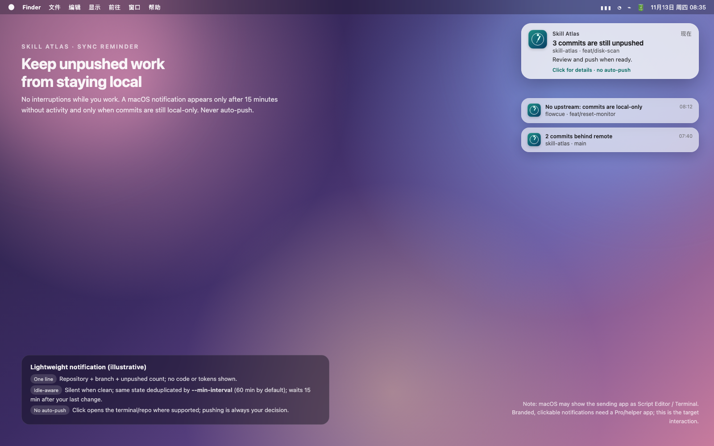
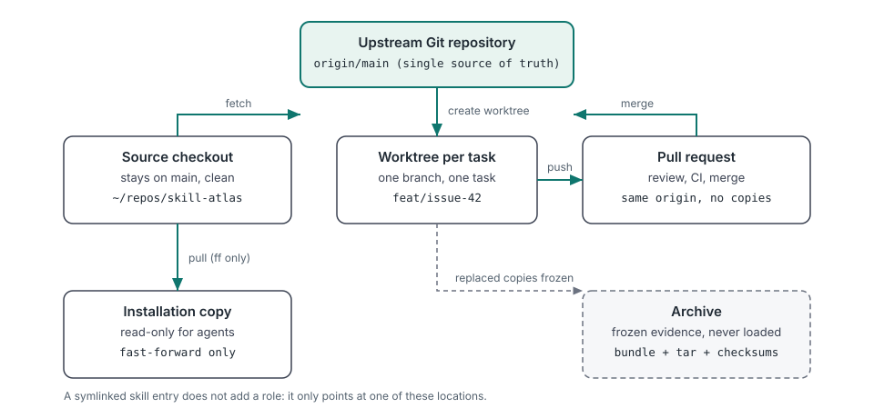
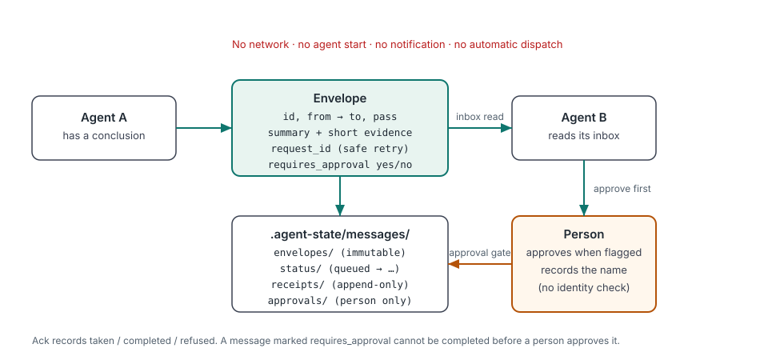
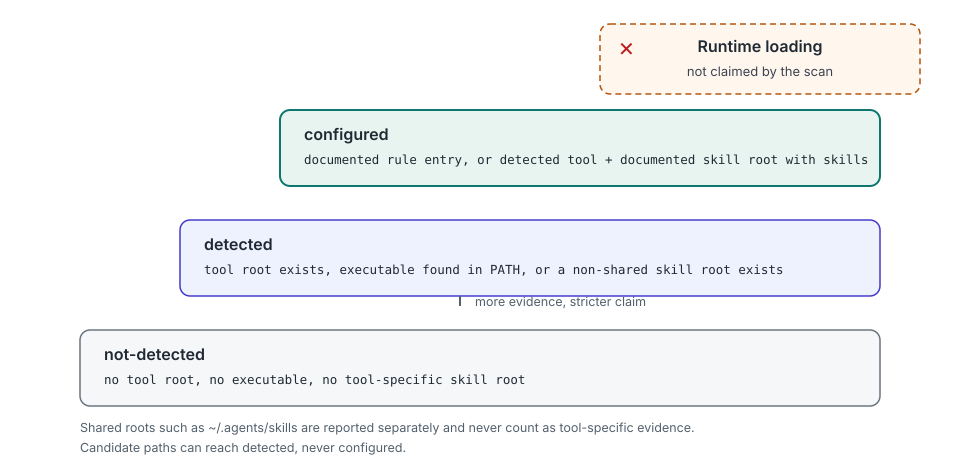

Agent skill manager · local-first · read-only by default
Know what your agents actually see.
Your local agent environment atlas
Skill Atlas reports which coding agents exist on your machine, where each one loads rules and skills from, whether your local Skill Atlas copies disagree, and where the same project exists in more than one place with drifted documents. It also audits what agent work leaves on disk and reminds you about local-only commits before a handoff. It is a skill for Codex, Claude Code, DeepSeek Harness, OpenCode, WorkBuddy, Kimi Code and other agent tools.
npx skills add Jorgut/skill-atlasNew in 0.12
Three additions for the part of agent work that happens after the code exists.
Disk audit
disk scan reports what agent work uses on disk — sessions, caches, media, build artifacts and Git objects — with risk levels and an opt-in move-to-Trash cleanup.
Push reminders
checkpoint and handoff now warn when commits are local-only or behind the remote. sync status shows the same evidence on demand, without fetching or pushing.
Lightweight notifications
sync notify can watch chosen repositories and their worktrees, then send a macOS notification only when a push is actually needed. Silent when clean; never auto-pushes.

Why this exists
Skill Atlas started from a concrete failure, not a feature list.
The version label hid three merged PRs
A source checkout and the copy an agent actually loaded were three merged pull requests apart,
while the installed version string still looked current. agents scan compares local
Skill Atlas copies and reports version_mismatch instead of trusting a label.
Agents kept their own project copies
The same project existed in several directories, each opened by a different tool.
projects audit groups likely-duplicate copies by a normalized git remote (confirmed)
or a case-folded directory name (probable).
The copies' documents had drifted
AGENTS.md, CLAUDE.md and state files disagreed between copies, so what an
agent believed depended on which checkout it opened. The audit hashes those documents and reports
which copies differ, without printing their contents.
Configured files are not loaded rules
A rule file existing on disk does not prove an agent read it. The evidence ladder stops at
configured; runtime loading is never claimed, and configured, loaded and
handoff-verified stay separate claims.
30-second demo
Trimmed output from real runs. Tool counts, paths and hashes differ per machine.
Which agent tools and Skill Atlas copies exist
python3 scripts/skill_atlas.py agents scan
## Summary
- tools detected: 12
- tools configured: 4
- skill atlas copies: 2
- version mismatch: falseWhere project copies drifted
python3 scripts/skill_atlas.py projects audit \
--project ~/repos/widgets --project ~/worktrees/widgets-review
## Duplicate groups
### `git-remote:github.com/example/widgets` (git-remote)
- divergent docs:
- AGENTS.md (2 distinct hashes)
- canonical candidate: `/home/you/repos/widgets`
- requires user confirmation: trueLeave a receipted handoff note
python3 scripts/skill_atlas.py message send --project . --task issue-28 \
--from Codex --to "Claude Code" --summary "Review the camera diff" \
--requires-approval
# Agent message: queued
- state: queued
- approval: pending
- note: Local file transport only; the receiving agent has not been notifiedHow it works
Three diagrams explain the whole model. No second source of truth, no hidden state.



configured.
Read the scan guide.What it does, what it refuses to do
The boundary is part of the product, not a disclaimer.
| It reports and plans | It refuses to do |
|---|---|
| Which agent tools leave evidence locally, and which rule and skill roots they point at | Send anything over the network by default; public search runs only with explicit options and configured access |
| Where Skill Atlas copies live, their versions, aliases and mismatch flag | Trust a version label or claim an agent loaded a copy it did not |
| Where project copies exist, which look duplicated, and which documents differ | Print, store or compare the contents of those project documents |
| Skill inventories, duplicates, update and consolidation plans | Execute agent tools, run third-party code or start another agent |
| Skill, model and tool recommendations scored on a shared rubric | Invent benchmarks, prices, availability or a permanent model ranking |
| Optional local handoff messages with receipts and a human approval gate | Move, merge, archive or delete files automatically |
Start here
Deep documentation lives in the repository; every page states its limits.